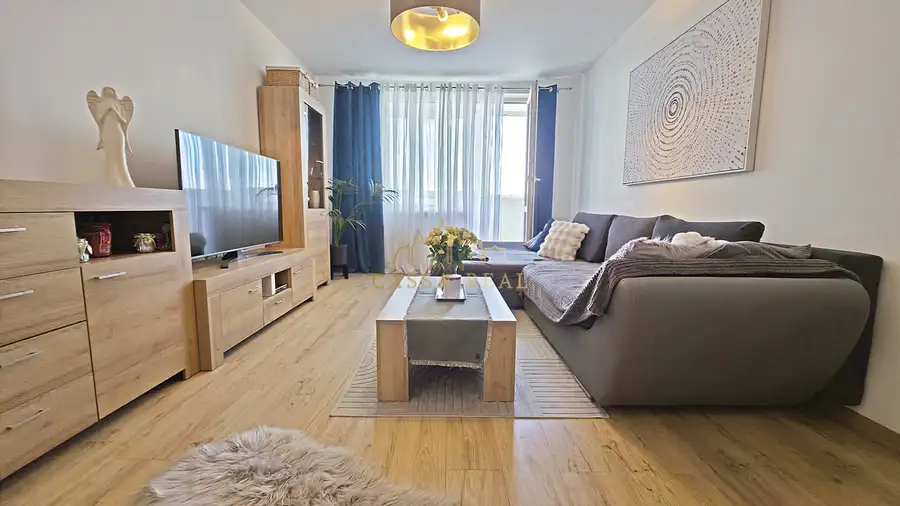
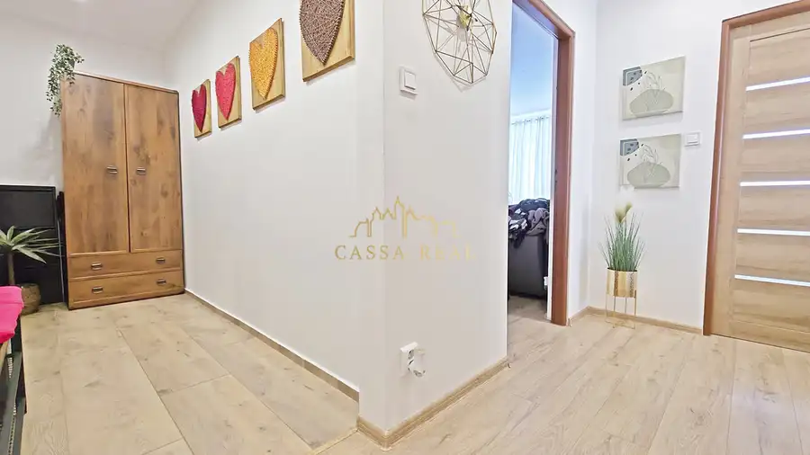
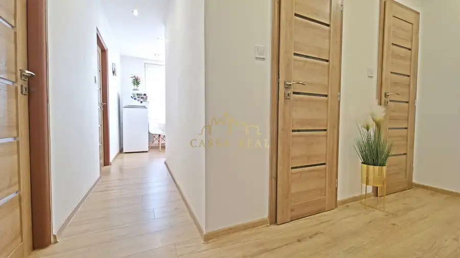
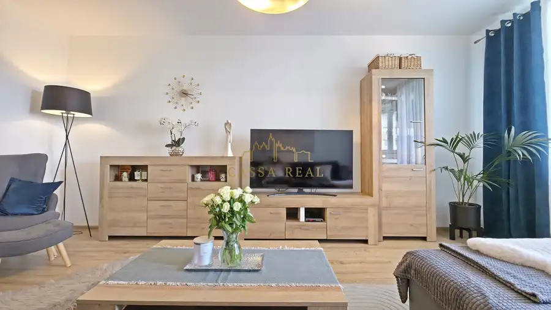
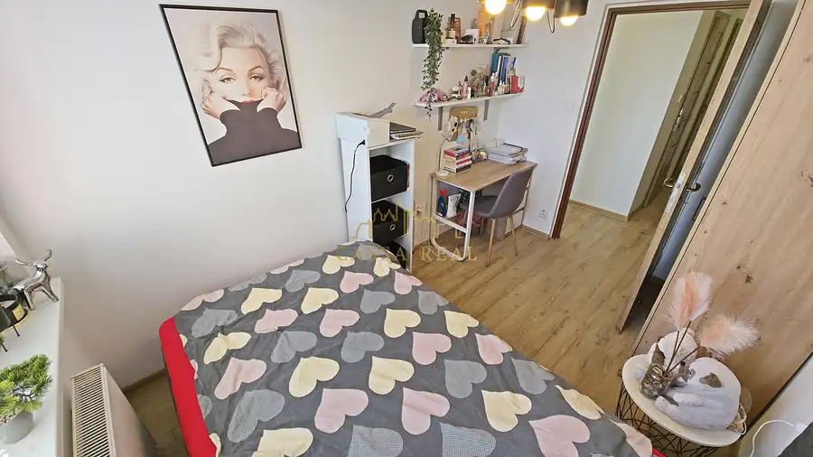
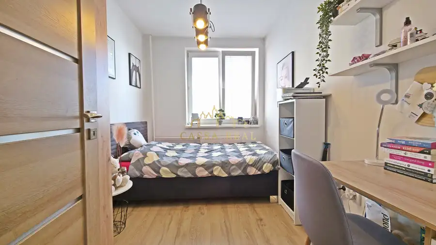
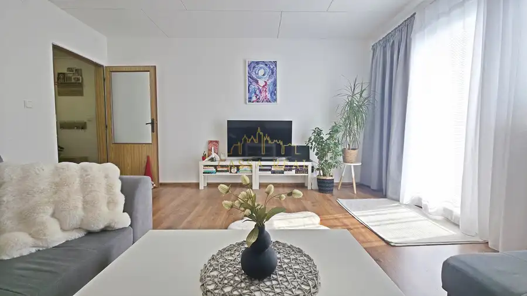
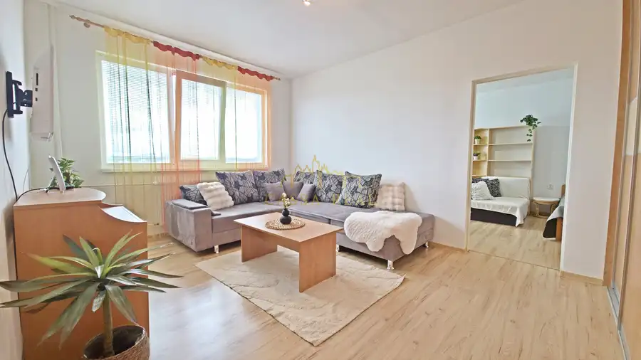
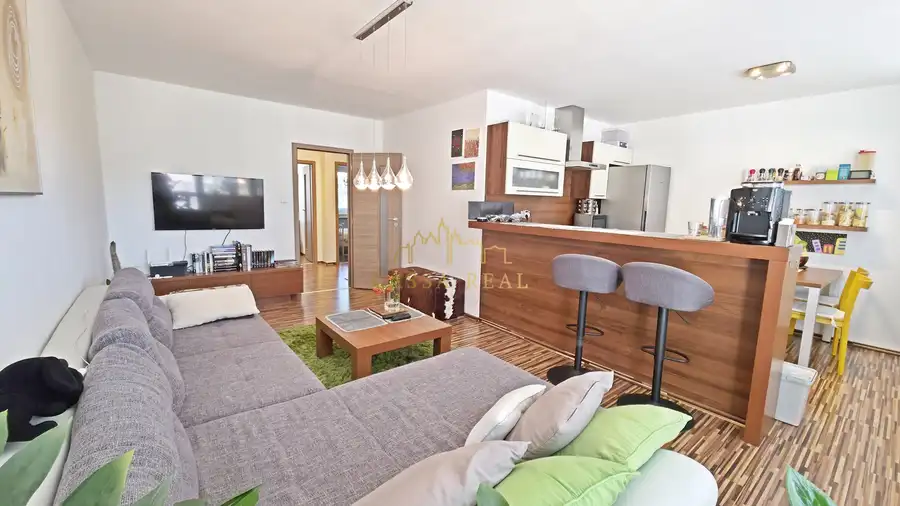

Kompletne zrekonštruovaný 3-izbový byt | 65 m² + loggia | zariadený | ždiarska – Košice, Nad Jazerom
Nad jazerom, Košice






- Dispozícia3-izbový
- Plocha65 m²
- Poschodie9.
- StavKompletná rekonštrukcia
- VlastníctvoOsobné
- Energetická triedaB
O nehnuteľnosti
Moderný, svetlý a kompletne zariadený 3-izbový byt, do ktorého sa môžete nasťahovať bez ďalších investícií.Vladimír Gaži a CassaReal Vám exkluzívne prinášajú na predaj veľmi príjemný, kompletne zrekonštruovaný a zariadený 3-izbový byt s výmerou 65 m² + loggia, situovaný na 9. poschodí zrekonštruovaného panelového bytového domu na Ždiarskej ulici v Košiciach – Nad Jazerom.Byt zaujme už pri prvom vstupe svojou príjemnou atmosférou, dostatkom denného svetla a vzdušnosťou. Veľkou výhodou je jeho stav – nehnuteľnosť je pripravená na pohodlné bývanie prakticky okamžite, bez potreby ďalších investícií.KOMPLETNÁ REKONŠTRUKCIAByt prešiel približne pred 5 rokmi kompletnou rekonštrukciou, pri ktorej sa riešili všetky dôležité technické aj estetické prvky nehnuteľnosti.Rekonštrukcia zahŕňala najmä:zmenu a úpravu dispozície,novú elektroinštaláciu,novú vodoinštaláciu,nové plávajúce podlahy,nové stierky,keramické obklady a dlažby,nové svietidlá,kuchynskú linku vyrobenú na mieru,vstavané kuchynské spotrebiče,nové zariadenie a nábytok,a množstvo ďalších úprav.Nehnuteľnosť sa predáva kompletne zariadená a vybavená tak, ako ju vidíte na fotodokumentácii.Novému majiteľovi tak odpadá nielen starosť s rekonštrukciou, ale aj s následným zariaďovaním bytu.BYTOVÝ DOM A PRÍSLUŠENSTVOByt sa nachádza v udržiavanom a zrekonštruovanom bytovom dome, pri ktorom je viditeľná vysoká úroveň starostlivosti o spoločné priestory aj jeho bezprostredné okolie.K bytu patrí:loggia,pivnica na prízemí bytového domu,k dispozícii je tiež príjemne upravená predzáhradka pred bytovým domom.Veľkým benefitom je aj bezproblémové parkovanie priamo pri bytovom dome.Lokalita ponúka pokojné a príjemné bývanie s dobrou občianskou vybavenosťou a dostupnosťou všetkého potrebného pre každodenný život.MESAČNÉ NÁKLADYKompletné mesačné náklady na bývanie pre 3-člennú rodinu predstavujú približne 257 €, pričom podľa súčasných majiteľov vznikajú pravidelné ročné preplatky približne vo výške 300 €.CENA224 900 €Cena zahŕňa kompletný profesionálny realitný a právny servis spojený s bezpečným prevodom vlastníckeho práva k nehnuteľnosti, vrátane prípravy potrebnej zmluvnej dokumentácie a zabezpečenia celého procesu predaja až po odovzdanie nehnuteľnosti.Byt je ideálnou voľbou pre klienta, ktorý hľadá hotové, kompletne zariadené bývanie bez ďalších investícií v obľúbenej lokalite Košíc.V prípade záujmu o bližšie informácie alebo osobnú obhliadku ma neváhajte kontaktovať.Vladimír GažiCassaReal s.r.o.Mäsiarska 50, 040 01 KošiceTel.: 0911 078 086E-mail: gazi@cassareal.sk
Parametre
- Cena vrátane energií
- Nie
- Druh
- 3 izbový byt
- Dátum zverejnenia
- 01. 09. 2026
- Energetická náročnosť
- Energeticky úsporný
- Energetický certifikát budovy
- B
- Energie
- 257
- Orientácia
- Juhovýchodná
- Plocha lodžie
- 3.5 m²
- Podlažie
- 9
- Počet izieb / miestností
- 3
- Počet lodžií
- 1
- Rok poslednej rekonštrukcie
- 2024
- Stav nehnuteľnosti
- Kompletná rekonštrukcia
- Telekomunikácie
- Internet, Optická sieť
- Typ
- Predaj
- Typ konštrukcie
- Panelová
- Umiestnenie
- Ďalšie nadzemné podlažie
- Vlastníctvo
- Osobné
- Vybavenie
- Lodžia, Terasa, Garáž, Sklad
- Vykurovanie
- Ústredné
- Zariadenie
- Zariadené kompletne
- Úžitková plocha
- 65 m²
Kde to je


Mohlo by Vás zaujímať

BytNové 159 900 €3-izbový byt | 63 m² + 6 m² loggia | vlastná záhradka cca 150 m² | Perín-Chym Perín-Chym 3-izbový63 m²1. podlažie
BytNové 174 999 €2-izbový byt | 53 m² | čiastočná rekonštrukcia | popradská | Košice – Západ Západ, Košice 2-izbový53 m²3. podlažie
BytNové 229 999 €Pražský 3-izbový byt | 68 m² + 6 m² loggia + kumbál | 2. poschodie | Trieda SNP, Košice – Terasa Západ, Košice 3-izbový69 m²2. podlažie